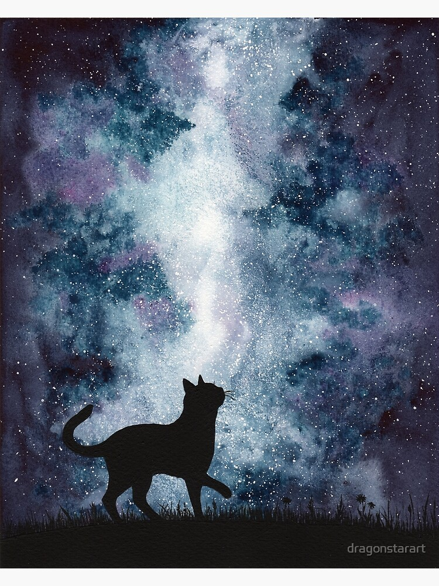

Home
GATO
Papers
Contacto
Grupo Astronómico Teórico-Observacional
Desde comienzos de la infancia, lo más anhelado por las personas (en su mayoria), ah sido observar las estrellas.
Aqui es donde la ciencia, la investigación y el arte toman protagonismo.
Haremos un recorrido por algunos instrumentos para observar infinitamente nuestro sueño.

https://www.iar.unlp.edu.ar/